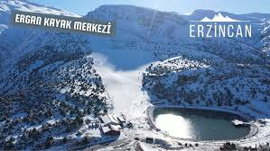

Ergan Dağı
Bu yazımızda Ergan Dağı hakkında daha fazla bilgiye ulaşabilirsiniz

Bitki örtüsü Ergan Dağı, İran-Turan ve Avrupa-Sibirya bitki bölgesi sınırında, Anadolu Çaprazı üzerinde yer alır. Dağ bölgesinde 60 familya ile 193 cinse ait 356 takson belirlenmiştir. 60 familyadan 59'u Tohumlu bitkiler, 1'i Pteridophyta (Eğrelti) grubundandır. Bitki türlerinin fitocoğrafik bölgelerine dağılımı şöyledir: 129 İran-Turan (%36,22), 32 Avrupa-Sibirya (%8,98), 11 Akdeniz (%3,08), 184 (%51,68) bilinmeyen. Takson türlerinin 72 adeti (%20,22) endemiktir[1]. Orman örtüsü, dağın kuzeyinde, kuzeybatısında, Ardıçlı Göl etrafında, Binkoç köyü kuzeyinde, Oğulcuk köyü etrafında görülür. Genelde 1730–1990 m yükseltileri arasındadır. Genelde sarıçam, boylu ardıç, katran ardıcı ve diken ardıç türleri hakimdir. Kullanım Dağın kuzey yamaçlarında Ergan Kayak Merkezi yer alır. Dağın bulunduğu alana kışın yoğun kar yağmasından ve karın uzun süre yerde kalması nedeniyle kayak merkezi yapılmıştır[1]. Ergan Dağı'nda, kayak, tur kayağı, kar raftingi, kar motosikleti, snowkite, kızak, kayaklı oryantiring ve buzul tırmanışı gibi pek çok kış sporu yapılabilmektedir.[2] Dağ üzerinde yazın da süren yağışlara bağlı büyükbaş hayvancılık yapılmaktadır. Kaynakça ^ a b c Korkmaz, Mustafa; Turgut, Nevzat (2014). "Ergan Dağı (Erzincan, Türkiye) Florası" (PDF). Biological Diversity and Conservation. 27 Mart 2020 tarihinde kaynağından (PDF) arşivlendi. Erişim tarihi: 27 Mart 2020. ^ Güneş, Erkan; Alagöz, Gürkan (2015). "Erzincan Ergan Dağı Kış Turizm Merkezine Yönelik Sürdürülebilir Turizm Önerileri" (PDF). ebyu.edu.tr. s. 723. 31 Mart 2020 tarihinde kaynağından (PDF) arşivlendi. Erişim tarihi: 27 Mart 2020.


Bu yazının altında Fotoğraf çekilen insanları görebilir ve sizlerde fotoğraf çekilebilirsiniz